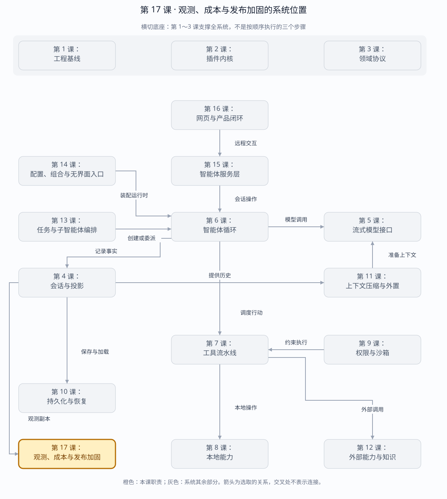

全站总体架构：前端 · 后端 · 数据库 · OTel 第 17 课：可观测、成本与发布加固
最后一层不是再加业务能力，而是证明系统在失败、重载、跨平台和冷启动时仍有清晰边界。
概念逐项对比 · 本章系统位置 · 局部图解 · 章节概览（可选） 章节概览（可选）：三框架职责摘要
本章对比：DeepSeek Harness / DeepAgents / OpenHands
口径：DeepSeek 依据本地原仓库（99f6f02fecdb），不是 harness-lab；deepagent 按 LangChain DeepAgents 理解；OpenHands 对比当前 Software Agent SDK，不混用旧 V0。在线资料核对于 2026-08-28，描述文档能力，不代表已在本实验室安装或测试。没有依据的同名能力不强行等同。
三者的关键区别： 把执行事实、恢复状态、统计投影和遥测副本四者分开，才能回答“记录在哪”“丢了能否重建”和“成本是否可信”。（基于上述依据的归纳）
本章在全系统中的位置
覆盖全系统的观测与验证层，消费运行证据而不接管执行事实。
下面是本课程的概念地图，不是某框架的逐包调用图，也不表示实验室已默认装配全部能力。三套框架的实际对应关系见上方横向对比表。
全系统定位 · 橙色高亮第 17 课 
打开大图 · Mermaid 图源
上游与输入 会话事件、模型用量、运行错误、测试和故障注入结果。 下游与输出 诊断记录、成本视图、告警与发布验收证据。 不归本章负责 遥测可能丢失或被禁用，不能当作恢复数据库；token 统计与货币成本也不是同一字段。 放进具体场景 服务异常后用遥测定位步骤，用本地持久化恢复会话；账单核对还要确认模型价格和缺失用量如何处理。
接着看下方「可视化图解」：局部模块图解释职责，时序图解释一次调用，分支图解释异常与边界。
本课导览
包含内容 OpenTelemetry 日志、会话遥测、成本投影、脱敏、故障注入、热重载、跨平台能力探测和发布验收。 涉及模块 SessionTelemetry、OTel 导出器、CostProjection、价格表、故障注入器、热重载器和发布脚本。白话解释 最后给系统装上仪表盘、账单计算器和压力测试，再证明换插件、断网络或换平台时仍能稳住。 解决的问题 让运行问题可观测、成本可复算、敏感信息可控，并把可靠性要求落实为可重复的发布门禁。
点击下面的概念名称，可直达该概念的三框架实现、区别与依据。原有能力清单、示例和验收描述面向 harness-lab 教学实现；不要将其直接当作上游框架能力声明。
完整能力清单
能力域 完整能力 不能替代什么
会话遥测 禁用、仅反馈和完整三种模式；选择事件、设置严重级别、脱敏并隔离导出失败。 不能替代 Session 事实日志。 OTel Logs 把选定会话事件转换为可检索、关联和告警的观测记录并送往 Collector。 不能用于会话恢复、分叉或权威计费。 反馈导出 仅反馈模式在用户提交反馈后导出对应记录，避免默认采集完整会话。 不能绕过脱敏与采集策略。 成本投影 按请求时刻匹配提供方、模型和生效价格，将互斥用量桶计算为高精度美元成本。 未知模型进入未定价列表，不能默认为零成本。 运行能力探测 探测平台、真实伪终端、强沙箱和进程隔离，并提供强制能力检查。 不支持的强能力不能静默降级。 热重载 先完整启动候选插件包，成功后原子切换，再释放旧包。 候选失败时旧能力继续服务，不发生闪断。 故障注入 在指定命中次数稳定触发异常或延迟，用于复现提供方和传输故障。 只影响明确配置的故障点和次数。 发布验收 类型检查、完整测试、构建、CLI 帮助、冒烟运行和资源收敛检查。 单个成功演示不能替代整套发布门禁。
主概念深挖：生产可信度闭环
发布加固位于全部运行能力的下游、运维与下一次发布的上游；它把事实、观测、成本和故障证据分开，再汇合成发布决策。
Session Events + Runtime State + Fault Scenarios（输入）
│ │ │
▼ ▼ ▼
SessionTelemetry CostProjection Capability/Fault Probe
│ OTel Logs │ Cost │ 测试证据
└────────────┬────┴──────────────┘
▼
Build + Smoke + Release Gates（输出）
│
▼
运维检索、告警、发布决策（下游）
权威恢复仍只读取 Session JSONL
背景与目的 功能测试通过不代表生产可靠；还必须知道故障时发生了什么、花了多少钱、平台能力是否满足以及升级能否安全回退。 输入与输出 输入是 Session 事件、价格表、运行平台、故障计划和候选插件包；输出是 OTel 记录、成本投影、能力报告、故障证据和发布门禁结果。 适用场景 线上检索告警、费用归因、隐私采集策略、跨平台发布、热升级和故障演练。 底层组件 遥测捕获与脱敏、TelemetrySink、版本化 PriceBook、高精度整数计算、运行能力探测、事务热切换和确定性故障注入。 核心逻辑 从权威事件派生可丢弃遥测和成本；候选插件先启动成功才切换；故障在指定命中次数触发；最终由类型、测试、构建和冒烟共同放行。 权衡 完整遥测提升诊断能力但增加隐私与存储成本；反馈模式更克制却覆盖有限；强发布门禁变慢但降低不可逆线上故障。 方案对比 把日志、账单和恢复混成一库查询方便，却让采样或价格变化破坏事实；分层派生保持职责清晰并允许各自重建。
场景穷举
生产证据链
├─ telemetry disabled → 不导出
├─ feedback-only → 用户反馈后导出关联记录
├─ full → 选择事件、脱敏、导出
├─ sink 失败 → 隔离，不阻塞 Session
├─ 已知模型价格 → 按请求时刻精确投影
├─ 未知价格 → unpriced，绝不记零
├─ 候选热重载失败 → 旧 Bundle 继续
├─ 平台缺强能力 → 明确拒绝/声明降级
├─ 第 N 次故障 → 稳定 throw/delay
└─ release gate 任一失败 → 不发布场景 系统行为 不能做的事
遥测后端宕机 记录导出失败并继续追加会话事实。 不能让观测系统成为业务单点。 敏感会话 禁用或仅反馈采集，并应用字段脱敏。 不能默认把完整提示词发送到 Collector。 价格变更 按 request/header 时间选择生效价格。 不能用当前价重算过去请求而不标版本。 热重载候选坏 候选上下文回滚，旧包继续对外服务。 不能先卸旧再试新。 能力缺失 强制要求时立即失败，否则显式报告降级。 不能把进程隔离叫成强沙箱。 故障演练 指定命中次数稳定复现。 不能随机污染未指定路径。
多方案对比
数据/机制 权威性 保留策略 主要用途
Session JSONL 权威事实。 按会话耐久策略。 恢复、分叉、重放。 OTel Logs 可丢弃副本。 采样、脱敏、集中保留。 检索、关联、告警。 Cost Projection 可重算派生值。 保留价格表版本和用量。 费用分析和预算。 指标 Metrics 聚合观测。 降采样。 趋势和告警，不还原单会话。 分布式追踪 Traces 采样调用图。 短期或采样。 跨服务延迟和因果定位。
关键设计反问
为什么 OTel Logs 不能用于恢复？ 它可能采样、脱敏、延迟、乱序或导出失败；这些对观测可接受，对权威状态恢复不可接受。
为什么成本用整数而不是浮点数？ 大量小额请求累加会放大二进制浮点误差；高精度整数单位让复算和对账确定。
为什么热重载要先启动候选？ 旧包是当前可用服务；只有候选完整通过启动不变量后才能原子替换，否则一次配置错误就会造成停机。
测试全绿是否足以发布？ 不够。还需证明构建产物可运行、CLI 协议正确、平台能力满足、故障可收敛且资源无泄漏。
三类数据不要混成一份
Session JSONL（权威事实） ──► 恢复 / fork / replay
│
├── usage projection × versioned PriceBook ──► Cost（可复算派生值）
│
└── capture + redact ──► OTel Logs ──► Collector / 检索 / 告警
best effort，不参与恢复数据 存储位置 丢失后果
Session Events / usage 本地 checksummed JSONL 影响恢复与准确计费输入 PriceBook 部署配置/版本化价格目录 usage 仍在，但暂时无法定价 Cost 查询时投影或外部账单缓存 可从 usage + 同版本价目表重算 OTel Logs SDK 队列与外部 Collector/backend 只影响观测，不影响 Session 恢复
会话遥测：三框架分别怎么做？
同一个问题： 观测数据丢失后，是否影响会话恢复？
这个概念的区别： 事实存储和观测出口应分别验收可靠性；“遥测收到”不能替代会话持久化完成。
OTel Logs 在 DeepSeek Harness 中的准确角色
原生实现把 canonical Session Event 的投影映射为两个 logger scope：ledger 与 ops。首个 streaming chunk 表示流开始，完整内容最终由 assistant/message 承载；导出前可挂脱敏 waterfall。同步捕获和 exporter 异常都被隔离，不能反向打断 agent loop。批处理、重试、队列和丢失策略归 OTel SDK；handoff cursor 只代表“交给 SDK”，不代表远端已确认。
因此这里采用的是 OTel Logs ，而不是用 Trace/Metric 重建 Session。若部署需要 traces/metrics，可为 HTTP、LLM、tool latency 和队列深度另加运维信号，但它们仍不是恢复事实源。
OTel Logs：三框架分别怎么做？
同一个问题： 三框架观测的信号和记录单位相同吗？
这个概念的区别： Logs 更适合逐条记录事实，Traces 表达调用层次与时间；共同使用 OTLP 不代表数据可以互相当恢复日志。
反馈导出：三框架分别怎么做？
同一个问题： 点一次反馈会上传哪些历史内容？
这个概念的区别： 评价某次运行与授权共享历史是不同动作；反馈按钮应明确披露的数据范围。
Cost 为什么是投影
同一 turn/step 的最终 usage 覆盖流式中间样本，避免重复计费。
缓存读写 token 与普通 input 分桶，不能重复相加。
按 request/header 的请求时刻选择当时生效价格，而不是按查看账单的今天。
金额使用整数皮美元计算；未知模型进入 unpriced，不静默记为 0。
成本投影：三框架分别怎么做？
同一个问题： token 用量如何变成金额，金额存在哪里？
这个概念的区别： 用量事实、价格规则、金额聚合与持久化位置要分别对齐；没有价格时不要把缺失金额当零成本。
加固边界
Capability Probe ─► seatbelt / process-only / PTY availability
HotBundle.reload ─► 影子挂载候选 ─成功→原子切换→释放旧代
└失败→回滚候选，旧代继续
FaultInjector ─► 第 N 次 throw/delay，稳定复现传输与 provider 故障
Build ─► TypeScript → dist JS + declarations + source maps + Web assets
Smoke ─► 编译产物 CLI + 插件内核 + JSONL 冷恢复
运行能力探测：三框架分别怎么做？
同一个问题： 运行环境不支持某项能力时如何表达？
这个概念的区别： 服务活着、功能存在和约束有效是三个不同探测结果。
热重载：三框架分别怎么做？
同一个问题： 代码更新后哪些状态保留，失败是否回滚？
这个概念的区别： 会话事件 WebSocket 与插件重建 SSE 是两条不同链路；重载粒度与状态保留必须具体到组件。
故障注入：三框架分别怎么做？
同一个问题： 如何稳定复现取消、挂起或模型异常？
这个概念的区别： 固定响应、固定时序与验证资源收敛分别设计；只让模型返回错误文本不是真实取消测试。
发布验收：三框架分别怎么做？
同一个问题： 怎样证明当前组合可以发布，而不是仅能启动？
这个概念的区别： 验收证据必须对应待发布版本、部署组合和失败场景；不能用框架具备测试工具替代实际运行结果。
运行与调试
cd harness-lab
bun run demo:observability
VS Code F5 → 16a · 遥测 或 16b · 成本投影
bun run demo:hardening
VS Code F5 → 16c · 加固与热重载
# 完整发布验收
bun run verify
# 推荐断点
# SessionTelemetry.#capture：投影、脱敏、失败隔离
# projectCost：usage 去重与时间版本价格
# HotBundle.reload：影子挂载和原子切换
# FaultInjector.hit：确定性故障点
# JsonlSessionStore.resume：编译产物冷恢复源码
返回完整路线 →